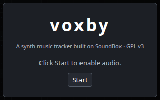
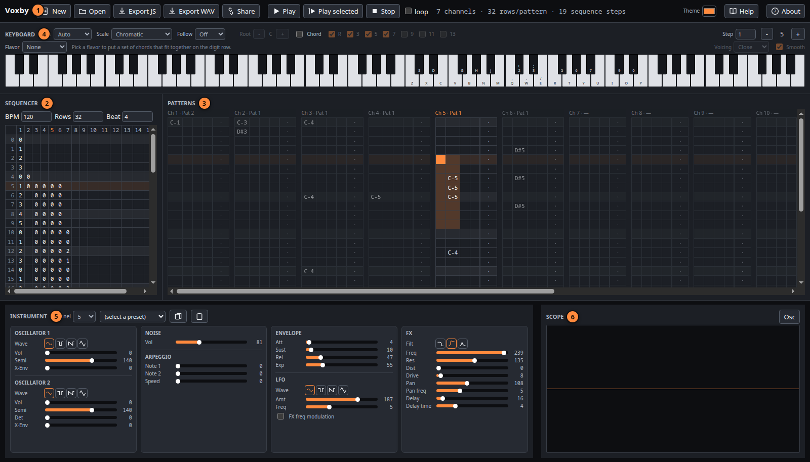
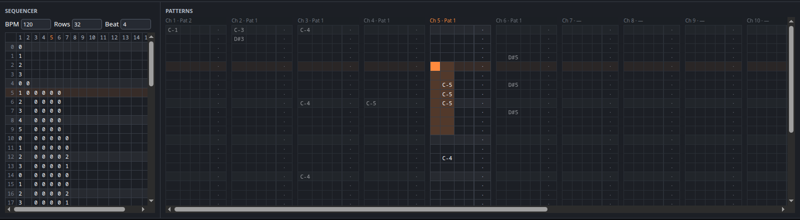
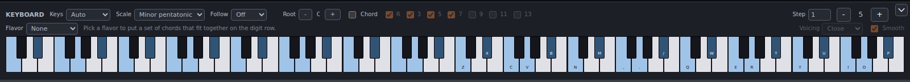
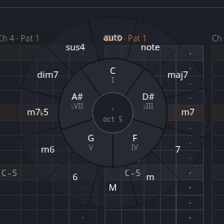
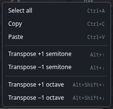
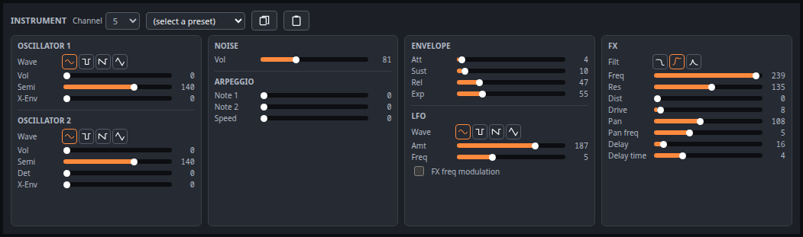
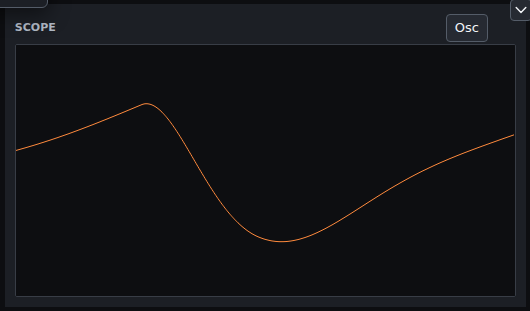
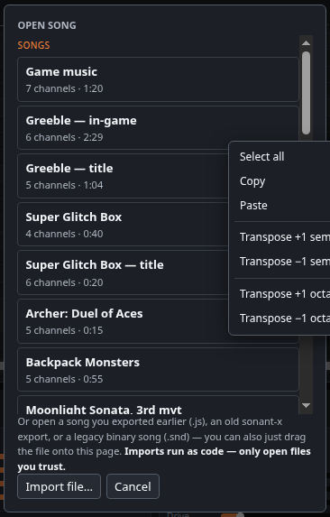

Voxby
A synth music tracker for the browser, aimed at music small enough to ship inside a js13kGames entry: a finished song is a few hundred bytes of plain JavaScript data plus a tiny playback routine.
Voxby is a tracker. A song is up to 16 channels; each channel has one instrument and up to 36 patterns of notes; the sequencer says which pattern each channel plays at each step of the song. Every note you hear is synthesized on the spot from an instrument's settings — there are no samples, which is the whole reason a song fits in a few hundred bytes.
Quick start

- Press Start.
- Press Open and pick a song from the library — starting from someone else's arrangement teaches the layout faster than an empty grid.
- Press Play. The cursor runs down the grids as the song plays, and the keys sounding at each moment light up on the piano.
- Click a cell in the pattern grid and play a few notes on the piano, or on the computer keys — Z X C… is the bottom octave, Q W E… the one above.
- Press Space to hear just the pattern you are editing, and Export JS when you want to keep it.
Nothing is stored on a server, and there is no autosave. A song lives in the page until you Export JS (which doubles as save) or copy a Share link. Closing the tab loses it — the editor warns before discarding unsaved work, but reloading past that warning is final.
The window

- Top bar — new/open/export/share, transport, the accent colour, this manual, and About.
- Sequencer — the running order, plus tempo and pattern length.
- Patterns — the notes in whatever each channel is playing at the sequencer's current row. Every channel is shown side by side; the highlighted column is the one you are editing.
- Keyboard — note entry, and the scale/chord helpers.
- Instrument — the sound the selected channel plays.
- Scope — what the output actually looks like.
Every control in the editor has a hover tip explaining what it does, so this manual sticks to the parts that don't fit in one: how the pieces relate, and the things worth knowing before you can guess them.
Sequencer

One row per step of the song, one column per channel. A cell holds a pattern number: type 0–9 or A–Z to place one of that channel's 36 patterns, Backspace to clear it. Hold Shift while typing to drop to the next row as you go, which is how you enter a run of steps quickly.
The same pattern number can appear as often as you like — that is how a song gets long without getting big. Clicking anywhere in a channel's column also makes it the selected channel, so the instrument panel and the highlighted pattern column follow your cursor around.
Two song-wide settings live here, because they apply to every pattern: BPM and Rows (rows per pattern). Four rows make a beat, so 32 rows is eight beats — two bars of 4/4. Beat only changes which rows get a highlight; set it to 3 for a waltz or 8 for 32nd-note patterns.
Rows resizes every pattern in the song. Making it smaller throws away whatever was past the new last row, and that cannot be undone.
Patterns
Each pattern has four note columns — four notes can sound at
once in one channel, which is what makes chords possible — and one
FX column. A pattern only exists where the sequencer put it: if
a channel's column header reads — instead of Pat 3,
there is nothing at this step to write into. Place a pattern number in the
sequencer first.
Tab moves between the three grids (sequencer → pattern → FX); Shift+Tab goes back. Which grid has the cursor decides what typing does, and what Space plays.
Enter inserts a row at the cursor, pushing the rest of the pattern down and dropping whatever fell off the end — useful for making room in a part you have already written.
Playing notes in

Notes go in at the pattern cursor from three places — the on-screen piano, the computer keyboard, or the entry pie — and all three sound the note as they write it. The computer keys are two overlapping octaves: Z X C V B N M with sharps on S D G H J, then Q W E R T Y U an octave up with sharps on 2 3 5 6 7. - and = (or < and >) move the whole set an octave at a time.
The notes are tied to physical key positions, so the fingering is identical on every keyboard layout. Only the printed labels differ, which is what the Keys selector fixes: set it to your layout (or leave it on Auto) and the piano labels itself with the characters your keyboard actually types.
The keys keep playing wherever you are in the window — drag an instrument slider and go on hitting notes to hear what you just changed. Only a field you type into (BPM, rows, Step) takes the keyboard away from the song, and a focused slider keeps just its own arrow keys.
Step
Step is how many rows the cursor moves after each note — a tracker's edit step. 1 walks down a row at a time, 4 writes one note per beat, and 0 stays put so you can stack a chord by hand into the four note columns.
Scale
Pick a Scale and the two key rows are remapped to that scale's notes only: Z–M and Q–P become straight runs of in-scale steps, and the sharp keys go unused. Every note you can reach then belongs in the key, which is a fast way to write something that sounds intentional. Root transposes the scale in half steps; the octave buttons still move the whole set.
Chords
Tick Chord and one keypress writes a whole chord across the row's four note columns. In a scale, the quality comes from the scale — the chord that belongs on that degree. In Chromatic, press a digit immediately after the note to name the quality yourself:
| Key | Chord | Key | Chord |
|---|---|---|---|
| 1 | maj7 | 6 | 6 |
| 2 | m7 | 7 | m6 |
| 3 | 7 (dominant) | 8 | m7♭5 |
| 4 | m (minor triad) | 9 | dim7 |
| 5 | M (major triad) | 0 | sus4 |
So Q then 1 writes a Cmaj7, and W then 6 a D6. The R 3 5 7 toggles pick which chord tones get written; switching the root off gives a rootless voicing, and the remaining tones pack left into the first columns. The chord's name is spelled out next to the toggles as confirmation.
The entry pie

Double-click a note cell to open the pie over it, then drag out and release to write what you land on — one gesture, no keyboard. Stay in the inner ring for a single note, carry on into the outer ring for a chord built on it. The notes it would write are outlined on the piano as you move, and you hear each one as you cross it. The scroll wheel (or - / =) changes octave without closing it; Escape or a right-click cancels.
Selecting and editing

Click and drag, or hold Shift while clicking or arrowing, to select a block of cells; Ctrl+A takes the whole grid. Ctrl+C and Ctrl+V copy and paste it, pasting from the cursor down and right. Copy and paste work in all three grids, each with its own clipboard.
Delete clears the selection (or the single cell under the cursor); Shift+Delete clears all four note columns of the current row at once, which is how you take out a chord you entered as one.
Selected notes transpose with Alt+↑ / Alt+↓ by a semitone, and with Shift held as well by an octave. The right-click menu carries the same operations, so nothing is keyboard-only.
The FX track
The narrow column on the right of each channel's pattern is its automation lane: one command per row, changing a single instrument parameter as the song plays. There is nothing to type — click a row in the FX column, then move any control in the instrument panel, and that parameter and value are recorded on that row. The instrument panel shows the value stored in the selected FX cell rather than the instrument's own while such a row is selected, so you are always looking at what will happen there.
FX commands are persistent. A change made in one pattern stays in force — into later patterns, and into other places the same pattern is used — until another command sets that parameter to something else. If a channel sounds wrong halfway through a song, an FX command earlier in it is the usual reason.
Instruments

Each channel has exactly one instrument, and every note in that channel is that sound. Two oscillators and a noise source are mixed, shaped by one envelope, and then run through the channel's effects in a fixed order:
The fastest way in is a preset: load one, play it, then move one slider at a time and listen. Some things worth knowing:
- Semi is pitch in semitones, where 128 means the note as written. Two oscillators a fifth or an octave apart is the whole trick behind most fat chiptune leads.
- X-Env sweeps an oscillator's pitch down as the note decays. Almost every kick drum, laser and explosion in a game soundtrack is this control plus noise.
- The envelope decides the note's length. Patterns trigger notes rather than holding them, so a note lasts exactly attack + sustain + release, however long the row is.
- Drive is the channel's output level — the mix control.
- The LFO does nothing until FX freq modulation is on: that switch is what routes it to the filter.
Playback
Play renders and plays the whole song. Play selected — and Space, which is the same thing — plays the sequencer's selection if you are working in the sequencer, or just the pattern you are editing otherwise. Space stops it again, as does Stop. loop repeats whatever gets played, which is how you sit inside one pattern while you shape it.
Playback is rendered up front, not streamed: the synth generates the whole selection into a buffer before the first sound, so edits made while it plays are heard the next time you press play. A long song takes a few seconds — a progress dialog appears while it works, and Cancel abandons the render. Playing one pattern instead of the whole song is nearly instant, which is why Space is the key you live on while writing. Once it runs, the grids follow the playing row and the piano lights the notes currently sounding.

Opening, saving, sharing

Export JS is save: it downloads the song as an ES module and clears the unsaved-changes flag. Open → Import file… takes it back, as does dragging the file anywhere onto the page. Three formats load:
| Format | Notes |
|---|---|
.js from Voxby | The round trip is exact — re-exporting an imported song reproduces the same file. |
.js from sonant / sonant-x | Converted on the way in. One-way: the result is a Voxby song. |
.snd | Legacy binary songs, including SoundBox's and Sonant's own. |
Importing a .js song runs it as code — that
is what makes an ES module a song file. Only open files you trust.
Share packs the entire song into a link. The data rides in
the URL's # fragment, so nothing is uploaded anywhere and no server
sees it; whoever opens the link gets the song loaded in their own editor. Long
songs make long links, and some chat clients mangle anything past a few thousand
characters — the dialog says how long yours is, and for a big song sending the
exported file is more reliable.
Export WAV renders the song to an ordinary 44.1 kHz WAV, for when something outside the browser needs the audio.
Using a song in a game
An exported song is a plain ES module — no player, no wrapper, just data:
export default {
songData: [ /* one entry per channel: instrument, patterns, notes */ ],
rowLen: 5513, patternLen: 32, endPattern: 6, numChannels: 4,
};Play it with player-small.js, the minimal
playback routine (zlib/libpng licensed, so it can go in anything). It synthesises
the song into an AudioBuffer, which you play like any other sound:
import song from './song.js'; // your export
// player-small.js defines CPlayer as a plain global: load it with a <script>
// tag ahead of your own code, or paste it into your bundle if you are golfing.
const ctx = new AudioContext();
const player = new CPlayer();
player.init(song);
while (player.generate() < 1) {} // synth the whole song
const buffer = player.createAudioBuffer(ctx); // ready to play
const src = ctx.createBufferSource();
src.buffer = buffer;
src.loop = true; // songs loop; SFX do not
src.connect(ctx.destination);
src.start();A browser starts every AudioContext suspended until the page has
had a real click or keypress, so call ctx.resume() from your first
input handler — a title screen's "press any key" earns its keep. (It is the same
rule this editor's own Start button exists for.)
Rendering costs real time — seconds for a long song — and that
while loop blocks the page for all of it.
generate() renders one channel per call and returns how far along it
is, so call it once per frame instead and you have a progress bar:
const player = new CPlayer();
player.init(song);
const tick = () => {
const done = player.generate(); // 0…1
drawLoadingBar(done);
if (done < 1) requestAnimationFrame(tick);
else buffer = player.createAudioBuffer(ctx);
};
tick();Render every sound the game needs up front, keep the buffers, and play each
one from a fresh BufferSource — a source node is single-use, but the
buffer behind it can be played any number of times at once. Route them through a
GainNode for volume and a StereoPannerNode for
position, and a couple of hundred bytes of song data covers your whole
soundtrack.
There is also createWave(), which returns a WAV in a
Uint8Array for handing to an <audio> element or
decodeAudioData, and getData(t, n) to read samples back
for a visualiser. demo.html and
arpeggio-demo.html are SoundBox's own working
examples; both take the older <audio> route, which costs you a
WAV encode and a decode that createAudioBuffer skips.
Keeping it small
- The export only writes what a song uses: trailing zeros, unused patterns and channels past the last one in play are all trimmed. Deleting a channel you abandoned really does make the file smaller.
- Reuse patterns instead of writing variations of the same bar. A repeated pattern number costs one character in the sequencer; a near-identical copy costs a whole pattern.
- Fewer channels, fewer patterns, shorter patterns — in that order. Under a minifier and compression, the note data is what remains, and duplicated data compresses far better than unique data.
- An SFX is a one-channel song with a single sequencer step. A dozen of them cost less than one tune.
Key reference
Shortcuts apply to whichever grid has the cursor. A field you are typing into takes the keyboard; a focused slider or checkbox keeps only the keys it uses itself.
| Keys | Does |
|---|---|
| Space | Play the selection or the current pattern; stop if playing |
| Tab / Shift+Tab | Move between sequencer, pattern and FX grids |
| ↑ ↓ ← → | Move the cursor (wraps at the edges) |
| Ctrl+arrow | Jump to the far end of the grid |
| Shift+arrow | Extend the selection |
| Home / End | First / last row |
| Ctrl+A | Select the whole grid |
| Ctrl+C / Ctrl+V | Copy / paste the selection |
| Delete / Backspace | Clear the selection or the cell under the cursor |
| Shift+Delete | Clear all four note columns of this row |
| Enter | Insert a row at the cursor, pushing the pattern down |
| Alt+↑ / Alt+↓ | Transpose the selection a semitone |
| Alt+Shift+↑ / ↓ | Transpose the selection an octave |
| - / = (or < / >) | Octave down / up |
| 0–9, A–Z | In the sequencer: place that pattern (with Shift, and step down a row) |
| note keys | In a pattern: play and write the note; in chord mode, a digit straight after names the quality |
| double-click | Open the note/chord entry pie on that cell |
| right-click | Transpose and clipboard menu for the selection |
| Escape | Close a dialog or the entry pie |
Licences and credits
Voxby is a rewritten editor around the audio engine of SoundBox, by Marcus Geelnard, whose synth, players, instrument presets and song format it keeps intact. The editing side — the multi-channel pattern view, the on-screen piano and its scale and chord helpers, the entry pie, the scope, the sharing links and the ES-module song format — is new; the sound is his.
Voxby inherits SoundBox's licence, the GNU General Public License v3.
The standalone playback routine, player-small.js, is released under the zlib/libpng licence, which is what makes it safe to ship inside your own game.
Third-party code
FileSaver.js — github.com/eligrey/FileSaver.js
Blob.js — github.com/eligrey/Blob.js
Same MIT terms as FileSaver.js above, © 2011 Eli Grey. Loaded only by the two standalone demo pages.
js-deflate — github.com/dankogai/js-deflate
Credits
Thanks to Marcus Geelnard for SoundBox, and to Jake Taylor (Ferris / Youth Uprising) for the original C synth that SoundBox itself started from.